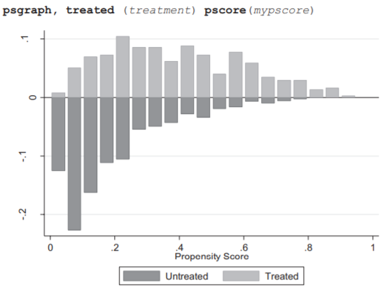

Propensity Scores
2020-09-24
HOME
NOTES RELATED
Notes
- When to consider propensity score matching?
- When you have:
- 2 discrete groups (but, also feasible for more than 2)
- Unequal size across groups
- This allows you to select a subset from the larger group
- Concern about possible confounders/comparability of groups
- A common context to do this:
- Relatively small dataset with lots of variables
- Comparison to traditional regression
- A better adjustment for baseline differences
- PSM avoids making any assumption about the functional form of the relationship between the individual confounders and the outcome
- PSM forces you to make sure the groups are really comparable
- Limitations
- Propensity score approaches can only account for differences in observable variables – not for differences in unobservables.
- Reduced generalizability
- E.g. if analyses are limited to 55-65 year-olds, results may not apply outside that age range
Garrido - Methods for Constructing and Assessing Propensity Scores, HSR 2014

Stuart, 2010
- Why matching?
When estimating causal effects using observational data, it is desirable to replicate a randomized experiment as closely as possible by obtaining treated and control groups with similar covariate distributions. This goal can often be achieved by choosing well-matched samples of the original treated and control groups, thereby reducing bias due to the covariates.
- Matching Methods
the first three represent the “design” and the fourth the “analysis”:
- Defining “closeness”: the distance measure used to determine whether an individual is a good match for another.
- Variables to include: include variables that predict outcome, but not treatment; exclude variables that may have been affected by the treatment of interest or variables that are fully (or nearly fully) predictive of treatment assignment.
- Distance measures: exact, Mahalanobis, propensity score, linear propensity score...
- Implementing a matching method, given that measure of closeness.
- Nearest neighbor matching
- Subclassification, full matching and weighting
- Assessing common support
- Assessing the quality of the resulting matched samples, and perhaps iterating with steps 1 and 2 until well-matched samples result.
- Numerical diagnostics: difference in means of each covariate; Rubin (2001)
- Graphical diagnostics: quantile–quantile (QQ) plots, a plot of the standardized differences of means
- Analysis of the outcome and estimation of the treatment effect, given the matching done in step 3.
- Guidance for Practice
- Think carefully about the set of covariates to include in the matching procedure, and err on the side of including more rather than fewer. Is the ignorability assumption reasonable given that set of covariates? If not, consider in advance whether there are other data sets that may be more appropriate, or if there are sensitivity analyses that can be done to strengthen the inferences.
- Estimate the distance measure that will be used in the matching. Linear propensity scores estimated using logistic regression, or propensity scores estimated using generalized boosted models or boosted CART, are good choices. If there are a few covariates on which particularly close balance is desired (e.g., pretreatment measures of the outcome), consider using the Mahalanobis distance within propensity score calipers.
- Examine the common support and implications for the estimand. If the ATE is of substantive interest, is there enough overlap of the treated and control groups’ propensity scores to estimate the ATE? If not, could the ATT be estimated more reliably? If the ATT is of interest, are there controls across the full range of the treated group, or will it be difficult to estimate the effect for some treated individuals?
- Implement a matching method
- If estimating the ATE, good choices are generally IPTW or full matching.
- If estimating the ATT and there are many more control than treated ndividuals (e.g., more than 3 times as many), k : 1 nearest neighbor matching without replacement is a good choice for its simplicity and good performance.
- If estimating the ATT and there are not (or not many) more control than treated individuals, appropriate choices are generally subclassification, full matching and weighting by the odds.
- Examine the balance on covariates resulting from that matching method.
- If adequate, move forward with treatment effect estimation, using regression adjustment on the matched samples.
- If imbalance on just a few covariates, consider incorporating exact or Mahalanobis matching on those variables.
- If imbalance on quite a few covariates, try another matching method (e.g., move to k : 1 matching with replacement) or consider changing the estimand or the data.
PSM in Stata
tabstat ${interested variable}, by(${treatment}) stat(N mean sd p50 min max)
// t-test
sdtest ${interested variable}, by(${treatment})
ttest ${interested variable}, by(${treatment}) [unequal/equal]
- Identify confounders which are both related to the treatment and the outcome
logit ${treatment} ${IDV}
reg ${outcome} ${IDV}
// if both coefficients are significant -> confounder
- Compute propensity scores and check balance of results
logit ${treatment} ${IDV}s
predict pscore
tabstat pscore, by(${treatment}) stat(mean sd min max)
//check balance in propensity score between attandence groups
pscore Catholic faminc8r math8 mathfam faminc8rsq, logit pscore(p) blockid(b) comsup detail
- Explore matching and weighting techniques using psmatch2
// By setting the seed, you ensure your results are reproducible.
set seed 123456
gen ranorder=runiform()
sort ranorder
1.Estimate Average Treatment Effect on the Treated (ATT) using 1-1 matching with replacement (the default is with replacement). Each observation in the treatment group is matched with one in the comparison group that shares the closest propensity scores. If you include the nonreplacement option, the observation from the comparison group used to match would not be used again to match another treatment group observation.
psmatch2 ${treatment} ${IDV}s, n(1) outcome(math12) [noreplacement] common logit ate
Check for balance of covariates after matching the sample
pstest ${IDV}s, treated(Catholic) both graph
2.Estimate ATT with caliper restriction and with replacement
psmatch2 ${treatment} ${IDV}s, n(1) outcome(${outcome}) common logit ate caliper(.2)
// The norm is 0.2 standard deviations of the propensity score
pstest ${IDV}s, treated(${treatment}) both graph
3.Kernel matching (Kernel weighting)
“In kernel matching, each treated individual is given a weight of one. A weighted composite of comparison observation is used to create a match for each treated individual, where comparison individuals are weighted by their distance in propensity score from treated individuals within a range or bandwidth of the propensity score” (Garrido et al., 2014, p10) Better matches (higher propensity scores) are given more weights. This reduces bias while adding precision by using the entire sample, excluding only observations outside of the common support.
psmatch2 ${treatment} ${IDV}s, outcome(${outcome}) kernel common logit ate
pstest ${IDV}s, treated(${treatment}) both graph
*4.Get "common support" observations
drop if _weight == .